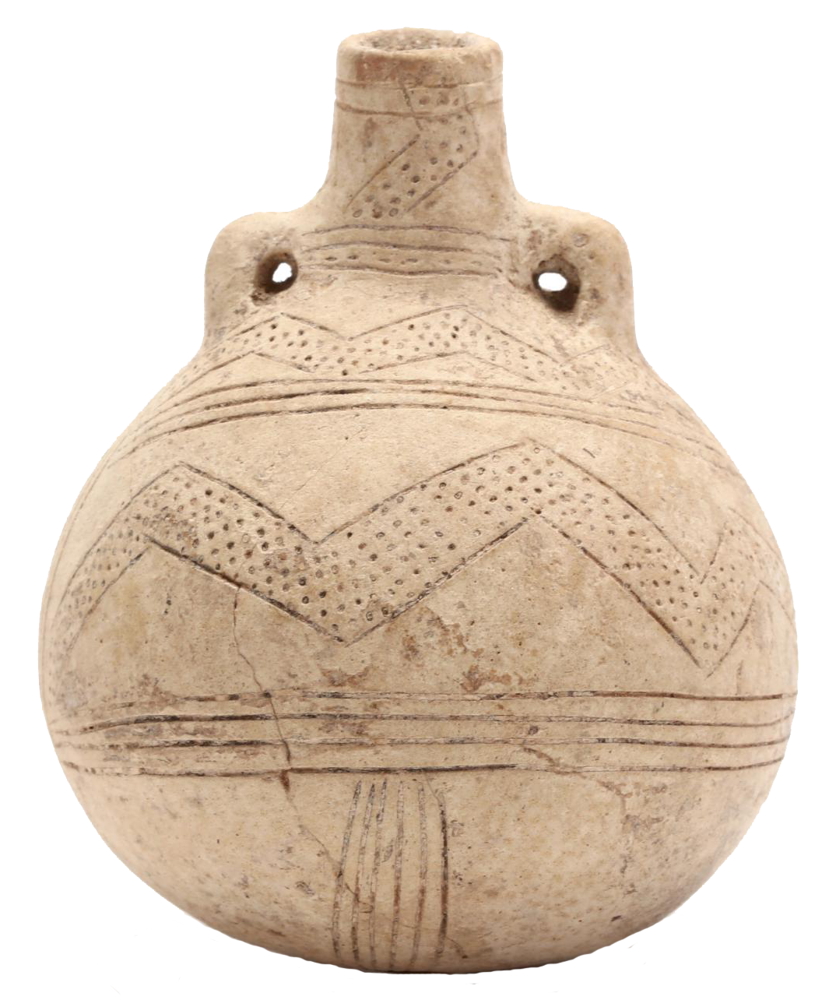
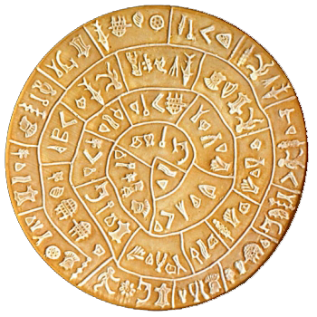
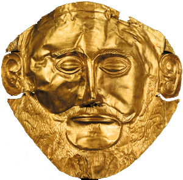

The use of bronze in tool making and weaponry was a rebirth for the civilization in Greece. The 2nd millennium BC gave birth to some great civilizations: the Minoan on Crete island, the Mycenaean on the mainland and the Cycladic (in Cyclades islands) in the islands of Centre Aegean. This period is characterized by a rapid growth of population and development of trading. The islands of Cyclades, located in the centre of the Aegea Sea, were an important trade centre between Europe and Asia. The Cycladic civilization developed rapidly in all domains: trade, politics and culture with impressive frescoes and marble figurines. Samples of the Cycladic architecture can be seen in the Museum of Cycladic Art in Athens and the regional museums on the Cyclades islands.
The Minoan civilization, named after the mythical King Minos, developed in Crete around 2,600 BC and onwards. The Minoans had a flourishing economic, political, social and cultural organization. The Minoan period was characterized by important trade activities and the construction of impressive palaces such as Knossos, Malia, Zakros and Phaestos. During this period, the first writing in the Greek World, called Linear A, appeared for the first time in Crete. The Minoans also developed a strong naval power and installed many colonies in the Aegean Sea.
According to the remains found on the island of Crete and the lack of defensive walls, the Minoan civilization must have had peaceful relations with the other civilizations of the Aegean. This civilization disappeared suddenly around 1,500 BC, possibly due to the huge volcanic eruption of Santorini island. It is believed that the eruption has caused an enormous earthquake and huge tsunamis that crossed the southern Aegean and covered the Minoan towns in volcanic ashes. It is after that period, around 1,200 BC, that the rival Mycenaean civilization took control of the trade network of Crete.
The Mycenaean civilization took its name from the town of Mycenae, the most powerful kingdom that actually dominated all through this era. The Mycenaean society was formed by an elite group organized around the authority of a single figure, the king, with varying degrees of power. Their citadels were fortified with the "Cyclopean walls", called this way because the Greeks believed that only Cyclopes could have lift so large stones. The Mycenaean society with its great military strength conquered Crete and took the control of the Minoan trade network.
The Mycenaeans also used a written language called Linear B, a development of the former Minoan Linear A, used only to register the goods and produce into the palaces. It was also the Mycenaeans that started the war against Troy as well as other expeditions around the Aegean. Between 1,250 and 1,150 BC, a combination of internal warfare and invasions from northern tribes destroyed most of the Mycenaean towns and the Mycenaean civilization disappeared.
Greece in the Roman era describes the period of Greek history when Ancient Greece was dominated by the Roman republic (509 – 27 BC), the Roman Empire (27 BC – AD 395), and the Byzantine Empire (AD 395 – 1453). The Roman era of Greek history began with the Corinthian defeat in the Battle of Corinth in 146 BC. However, before the Achaean War, the Roman Republic had been steadily gaining control of mainland Greece by defeating the Kingdom of Macedon in a series of conflicts known as the Macedonian Wars. The Fourth Macedonian War ended at the Battle of Pydna in 148 BC and defeat of the Macedonian royal pretender Andriscus. The definitive Roman occupation of the Greek world was established after the Battle of Actium (31 BC), in which Augustus defeated Cleopatra VII, the Greek Ptolemaic queen of Egypt, and the Roman general Mark Antony, and afterwards conquered Alexandria (32 BC), the last great city of Hellenistic Greece.[1] The Roman era of Greek history continued with Emperor Constantine the Great's adoption of Byzantium as Nova Roma, the capital city of the Roman Empire; in AD 330, the city was renamed Constantinople; afterwards, the Byzantine Empire was a generally Greek-speaking polity.